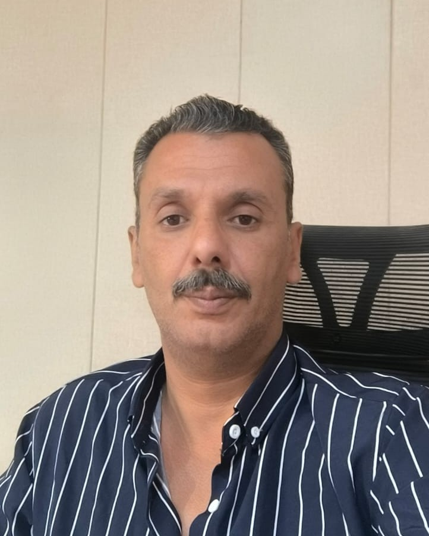

01 / DISTRIBUTION
MV & LV Systems
RMU, MV cables, electrical rooms, transformers, feeders and distribution equipment.
Senior Electrical Engineer specializing in MV/LV distribution, electrical construction, consultant site supervision, and testing & commissioning.

Ahmed Masoud is an electrical engineer working in Saudi Arabia with 17 years of professional experience across electrical construction and infrastructure. His areas of practice include medium- and low-voltage systems, electrical site supervision, installation inspections, and testing and commissioning.
Practical experience across electrical infrastructure, power distribution equipment and construction quality control.
RMU, MV cables, electrical rooms, transformers, feeders and distribution equipment.
Construction inspections, technical reviews, installation quality and coordination.
Pre-energization inspections, test documentation and electrical system verification.
Electrical engineering insights drawn from construction and site supervision practice.
For professional networking, electrical engineering discussions and construction collaboration, contact me on LinkedIn.